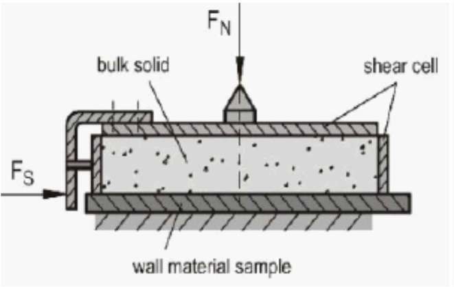
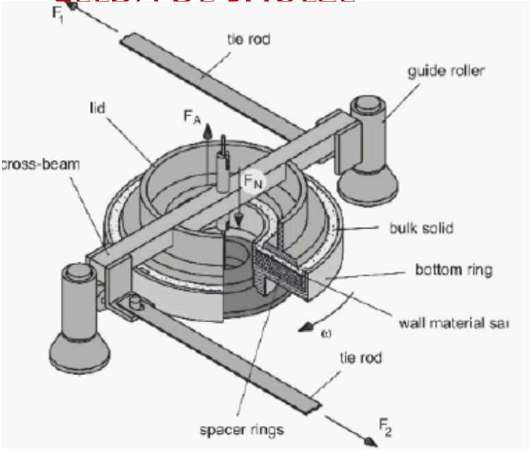

Flujo Granular
Unidad 6 — Geofísica de Medios Granulares
- Reología local inercial
- Número de inercia
- Relaciones constitutivas
- Flujos en silos y tolvas
- Ángulo de fricción de pared
Thomas Gallot · María Alejandra Aguirre
Mayo 2025


Flujo en un canal 2D
Se varía el ángulo de inclinación (régimen de flujo estacionario)
A partir de un gran embudo inicialmente se colocan 15000–30000 esferas.
Canal bidimensional de vidrio de 3.7 m de largo, 0.5 m de profundidad y 6.7 mm de ancho.
Bolitas de acetato-celulosa de 6 mm de diámetro. Fondo: rugoso (bolitas pegadas).
T. G. Drake, "Structural features in granular flows," J. Geophys. Res. 95, NO.B6, 8681 (1990)
Tipos de flujos
Región de colisiones
- Zona de saltación
- Zona caótica
- Zona de capas deslizantes
Región de fricción
- Zona de bloques deslizantes
- Zona cuasi-estática
Tipos de flujos
Región de fricción
• Región cuasi-estática
Fuerte influencia de la base. Movimiento cercano al de un cuerpo rígido. Desplazamientos o rotaciones individuales imperceptibles.
• Región de bloques deslizantes
Fuerte influencia de la base. Desplazamiento en bloques (varias partículas). Velocidad > vel. cuasi-estática. Ocupa ~25% de la región de flujo.
Región de colisiones
• Región de capas deslizantes
Desplazamientos relativos de capas de granos (similar a bloques, pero con predominio de colisiones internas).
• Región caótica
Desplazamientos aleatorios. Camino libre medio ~ d
• Región saltación
Camino libre medio ~ 100 d. Sensible a la inclinación del canal.
↓ Superficie libre
Tipos de flujos

Región de colisiones
Gas disipativo: Teoría cinética modificada. Colisiones binarias.
Líquido: visco-plástico
Leyes constitutivas. Interacciones multicontactos.
Región de fricción
Sólido (cuasiestático): Teorías de plasticidad (suelos).
Reología local (inercial) para flujos densos
Cizalla con un plano — Régimen friccional
Configuración sencilla para estudiar la reología: esfuerzo de corte \(\tau\) y compactación \(\phi\) en función de tasa de corte \(\dot{\gamma}\) y presión P.

Material granular:
Partículas de diámetro d y densidad \(\rho\), confinado entre dos placas rugosas sometido a presión P en la placa superior.
Se impone \(V_w\) en la placa superior ⇒ material se cizalla con tasa de corte:
En ausencia de gravedad: \(\tau = \sigma_{xz}\) y \(P = \sigma_{zz}\) son homogéneos.
Número de inercia
Para sistemas grandes (\(L/d \gg 1\)) y partículas rígidas (módulo de Young \(\gg P\)) el sistema es controlado por un único parámetro adimensional:
Tiempo microscópico
Tiempo que una partícula tarda en moverse una distancia d bajo la presión de confinamiento P.
\[m\frac{d^2 z}{dt^2} = F_Z \quad \Rightarrow \quad t_{micro} = \frac{d}{\sqrt{P/\rho_p}}\]Tiempo macroscópico
Relacionado a la deformación media y el tiempo entre entrampamiento.
\[\Delta u = \dot{\gamma}\,d \quad \Rightarrow \quad t_{macro} = \frac{1}{\dot{\gamma}}\]Forterre Y. y Pouliquen O., Granular Flows. Seminaire Poincaré XIII (2009) 69-100.
Fei et al. Scientific Reports, Nature, 10:12162 (2020)
Números adimensionales
Número adimensional que considera los parámetros de control (\(P, \rho_p, d, L, V_w\)):
Números adimensionales que consideran la respuesta del sistema:
Considera el \(\tau\) necesario para poder fluir, tiene en cuenta la respuesta interna del sistema.
Coeficiente de fricción efectivo (macroscópico)
Fracción de compactación
\(\mu\) no depende del coeficiente de fricción (pero no puede ser nulo) entre granos ni del coeficiente de restitución.
Deformación \(\gamma\)
¿Qué pasa con \(\mu\) vs I y \(\phi\) vs I?
Forterre Y. y Pouliquen O., Seminaire Poincaré XIII (2009) 69-100. Fei et al., Nature 10:12162 (2020). Barker et al., J. Fluid Mech. 779, 794–818 (2015).
Relaciones constitutivas
Análisis adimensional impone ⇒ relaciones constitutivas:
Permite clasificar diferentes regímenes de flujo en sistemas densos:
Régimen cuasiestático (\(I \lt 0.01\)): la deformación macroscópica es lenta en relación a reacomodamientos microscópicos. Puede haber situaciones donde las relaciones constitutivas deban ser modificadas.
Régimen inercial (\(I > 0.1\)): flujo rápido, se obtiene aumentando tasa de corte o disminuyendo P.
Contras de estas relaciones constitutivas:
No tiene en cuenta efectos colectivos: tamaño de bandas de cizalla, ángulos de máxima estabilidad para sistemas de pocas capas, fenómenos a escala del grano. Solo sirve para describir flujos uniformes y estacionarios o si \(\tau\) depende de P y \(\dot{\gamma}\) locales.
⇒ reometría localizada = reometría inercial.
Forterre Y. & Pouliquen O., Seminaire Poincaré XIII, 69-100 (2009). Fei et al., Nature 10:12162 (2020). Barker et al., J. Fluid Mech. 779, 794–818 (2015). Kamrin, Front. Phys. 7:116 (2019)
Relaciones constitutivas
Análisis adimensional: \(\tau = P\,\mu(I)\), \(\phi = \phi(I)\). Mediante simulaciones numéricas y experimentos:
Discos (2D) y Esferas (3D)
- \(\mu\) aumenta con el aumento de la tasa de corte o la disminución de P
- \(\phi\) decrece linealmente
- En el límite cuasiestático (\(I \to 0\)): \(\mu \to \mu_S\) cte y \(\phi = \phi^{max}\)
- ⇒ En flujos densos ⇒ \(\mu\) y \(\phi\) no dependen de propiedades microscópicas de los granos
- Los granulares se comportan como fluidos visco-plásticos donde el esfuerzo de fluencia está asociado a la fricción estática.
O. Pouliquen, Phys. Fluids 11 (1999). L.E. Silbert et al, Phys. Fluids 15, 1 (2003). Forterre Y. & Pouliquen O., Seminaire Poincaré XIII (2009).
G. Lois et al, Phys. Rev. E 72, 051303 (2005). S.B. Savage, Adv. Appl. Mech. 24, 289 (1984).
Relaciones constitutivas
Perfil de velocidad lineal.
Si los esfuerzos dependen solo de la presión local y la tasa de corte local se puede definir una reología intrínseca.

Al aumentar I:
- La red de fuerzas es menos densa, la longitud de correlación y el tiempo de contacto entre granos disminuye
- Aumentan las fuerzas impulsivas y los contactos donde se movilizó la fricción
Para flujos inerciales: el aumento de \(\mu\) con I se debe a la anisotropía en los contactos.
Forterre Y. & Pouliquen O., Granular Flows. Seminaire Poincaré XIII, 69-100 (2009).
Relaciones constitutivas
Ajustando los experimentos y simulaciones se pueden obtener expresiones analíticas:
Caso 3D: esferas de vidrio monodispersas
\(\mu_1 = \tan 21°, \; \mu_2 = \tan 33°\)
\(I_0 = 0.3, \; \phi_{max} = 0.6, \; \phi_{min} = 0.4\)
Existe un valor crítico \(\mu_1\) ⇒ hay que imponer \(\tau > \mu_1\, P\) para que el sistema empiece a fluir.
Relaciones constitutivas: Pueden ser usadas para estudiar otras configuraciones
En flujos en planos inclinados se observa que \(\mu\) satura a un valor finito (\(\mu_2\)) cuando \(I \to \infty\) (en el frente).
Forterre & Pouliquen, Seminaire Poincaré XIII, 69-100 (2009). Pouliquen et al., J. Stat. Mech. P07020 (2006).
Relaciones constitutivas
\(\mu^*\): coeficiente de fricción efectiva
Da Cruz 2005
- Régimen cuasiestático crítico para valores muy pequeños de I: \(\mu^*\) casi no cambia y se observan intermitencias.
- La transición al régimen de flujo denso no está bien definida (\(I \cong 10^{-3}\)): puede depender del tamaño del sistema.
- La transición entre flujo denso y régimen colisional ocurre en \(I \cong 10^{-1}\).
- \(\mu^*\) aumenta en el régimen de flujo denso y satura en el régimen colisional.
Da Cruz et al, Phys Rev E 72, 021309 (2005). Rognon et al, Powders and Grains 2005, 565-568.
Relaciones constitutivas
Hay casos donde el sistema no responde a estas relaciones si I es pequeño (régimen cuasiestático)
Campo de velocidades: observado vs predicción
- Para I pequeños: existe flujo por debajo del valor crítico \(\mu_1\)
- Para I grandes: coincide con los datos del experimento de plano cizallado (---).
Da Cruz et al, Phys Rev E 72, 021309 (2005). Koval, Phys Rev E 79, 021306 (2009). Kamrin & Koval, PRL 108, 178301 (2012).
Flujos en silos y tolvas
Se pueden presentar los siguientes regímenes:
Flujo continuo
Se presenta cuando la boca de salida Do es suficientemente grande para no bloquearse por formación de arcos (2D) o bóvedas (3D) en la boca del silo.
Flujo intermitente
El flujo se bloquea y desbloquea periódicamente por formación y ruptura de arcos (o bóvedas) respectivamente en la boca del silo.
Sin flujo
El flujo se bloquea por formación de arcos en la boca (o bóvedas) del silo.
Flujo continuo
Clasificación según las normas europeas de construcciones estructurales EUROCODE.
Se describen tres tipos principales de flujo:
Flujo de masa
Flujo embudo: central e interno
Eurocode 1, Basis of design and actions on structures - Part 4: Actions in silos and tanks, Marzo 1998.
Reed, A.R, Hopper Shapes and Flow Patterns, University of Greenwich, London, 1994.
Flujo de Masa (Mass Flow)
- Todas las partículas del silo están en movimiento
- No hay zonas de estancamiento
- Descarga con patrón FIFO (First in, First out): el grano que ingresó primero al silo sale aproximadamente primero.
- Ocurre cuando la fricción grano-pared es menor que la fricción grano-grano.
- El ancho del canal de flujo coincide con el ancho del silo.
- No necesariamente todas las partículas se mueven a velocidades iguales.
Configuración más usual: paredes inclinadas con \(\alpha > 70°\)
⇒ Se pierde capacidad de almacenamiento.
⇒ No se usan para silos de almacenamiento prolongado pero sí para tolvas de descarga.
Flujos embudo o tubular (Funnel Flow)
Flujo central y flujo interno
- El material forma una zona de estancamiento que reduce la capacidad real de vaciado del silo.
- Se favorece la segregación por existencia de zonas de altos gradientes de velocidad.
- Para almacenamiento de materiales perecederos: zonas con material que nunca es evacuado ⇒ puede producir caducidad o contaminación.
- Si el material de la "zona muerta" permanece demasiado tiempo, se produce "caking" asistido por la humedad.
- Ej: azúcar y sal.

Flujo Central (Core Flow)
- Aparecen zonas de estancamiento adyacentes a la pared del silo en las cercanías de la boca de descarga, formando un canal de flujo con paredes constituidas por el propio material granular.
- Existe rozamiento entre el medio granular y la pared en las zonas superiores del silo.
- La fricción grano-pared comienza a ser preponderante frente a la fricción interna grano-grano.
- La fricción grano-pared frena los granos cerca de la pared y la superficie libre cambia de forma.
- Existe un gradiente de velocidades desde la pared hacia el centro mucho más marcado que en el flujo de masa.
Flujo Interno (Internal Flow)
- Todos los granos en contacto con la pared del silo permanecen en reposo.
- Canal formado por el medio granular que abarca toda la altura del apilamiento.
- La zona central del silo posee mayores velocidades ⇒ depresión cónica (3D) o angular (2D).
- Durante la descarga, el avance de la superficie libre provoca avalanchas del material estancado en las adyacencias de la pared.
- Ratholes: aparece cuando el material adyacente a la pared nunca se descarga debido a efectos cohesivos.
Tipos de flujo continuo
Los límites entre un tipo de flujo y otro se han estudiado experimentalmente en función de variables constructivas del silo.
Patrones de flujo en silos en función de parámetros constructivos
(forma geométrica del silo, inclinación de paredes \(\alpha\) y ángulo de fricción de pared \(\varphi_w\))

Reed, A.R, Hopper Shapes and Flow Patterns, Effects on product Quality and Downstream Processes, University of Greenwich, London, 1994.
Tipos de flujo continuo
Alto \(\alpha\) y/o bajo \(\varphi_w\): flujo embudo
Zona indefinida
Bajo \(\alpha\) y/o alto \(\varphi_w\): flujo masa
Zona indefinida: pueden existir ambos tipos de flujo.
- Que se produzca uno u otro depende fuertemente de otros parámetros como distribución de tamaños y forma de los granos, grado de carga del silo, etc.
- Es posible observar una alternancia temporal entre los dos tipos de flujo, que en grandes silos puede ocasionar vibraciones que solicitan la estructura a la fatiga.
- Pueden coexistir dos o más configuraciones según la posición de altura en el silo: flujo de masa en la boca de descarga que se transforma en flujo central para posiciones alejadas.
Ejemplo de flujo continuo
Mapa de velocidades en escala cromática correspondiente al vaciado de una tolva llena con microesferas de vidrio de tamaño medio 1 mm, con un ángulo de pared \(\alpha = 75°\). La boca de descarga se encuentra en la posición Y = 0.
Para \(Y \geq 120\) mm:
- Comienza a formarse una zona de estancamiento adyacente a las paredes del silo.
- La densidad aparente del medio granular es menor y más uniforme (en Y) que en la zona de la boca de descarga.
⇒ la fricción intergranular será menor que la fricción entre los granos y la pared
⇒ movimiento relativo intergranular demanda menor energía que el movimiento relativo entre granos y pared.
Conclusión: flujo de masa en la boca de descarga y flujo central para posiciones alejadas.
Tipos de flujo continuo
La presencia de cada uno los tipos de flujos descriptos depende fundamentalmente:
- geometría del silo (cilíndrico o rectangular, altura h y diámetro D)
- inclinación y rugosidad de las paredes
- tipo y tamaño de los granos
Típicamente, el flujo de masa ocurrirá en silos esbeltos (\(h/D > 1.5\)) mientras que el flujo tipo embudo es más característico de silos de baja esbeltez (\(h/D \lt 1.5\)).
Lecture 15C.2: Structural design of Bins, Master Teaching, Katholieke Universiteit Leuven, 2003.
Ángulo de fricción de pared (\(\varphi_w\))
Caracteriza la fricción entre un medio granular y la superficie de un sólido (pared del silo o tolva).
Define el tipo de flujo que se desarrollará en el interior de un silo o una tolva.
Para asegurar un escurrimiento del tipo flujo de masa, hay que disminuir el valor del coeficiente de fricción de pared ya sea disminuyendo la rugosidad de pared o cambiando las propiedades del material granular.
Schulze, D., Development and application of a novel ring shear tester, Aufbereitungs-technik 35 (1994) 10, pp. 524–535.
Ángulo de fricción de pared (\(\varphi_w\))
Se determina experimentalmente mediante un ensayo de laboratorio.
Se dispone una muestra de material granular sobre una superficie de características similares a la pared del silo o tolva por la que debe poder deslizar el material y se somete a una tensión normal vertical, llamada tensión normal de pared \(\sigma_w\).
Luego se genera un movimiento relativo entre ambas piezas (generalmente el elemento móvil es el que simula la pared del silo), se mide la fuerza de corte necesaria para realizar el movimiento y con ese valor se determina la tensión tangencial \(\tau_w\) existente entre el medio granular y la pared.
Ángulo de fricción de pared (\(\varphi_w\))
Para una dada tensión normal, la tensión tangencial se releva cuando el material granular llega al estado estacionario: requiriendo una tensión tangencial constante para ser deslizado respecto de la superficie del sólido.
Luego se retira una cierta cantidad de carga normal, y se desplaza la superficie móvil nuevamente. El proceso se repite tantas veces como puntos de la curva \(\sigma_w - \tau_w\) quieran relevarse.
Si la dependencia es lineal:
⇓
\(\varphi_w\) = pendiente
La curva \(\sigma_w - \tau_w\) representa el límite de fluencia del material respecto de la pared que lo rodea.
A tensiones tangenciales por encima de la curva, el material fluye sin problemas; por debajo, el material granular está impedido de deslizarse respecto de la pared.
Ángulo de fricción de pared (\(\varphi_w\))
Cuando la curva \(\sigma_w - \tau_w\) no es una recta:
- El ángulo de fricción de pared \(\varphi_w\) depende de \(\sigma_w\).
- Se calcula como la pendiente de la recta que pasa por el origen de coordenadas y el punto de la curva correspondiente a la tensión normal elegida \(\sigma_w\).
El coeficiente de fricción de pared se define entonces como \(\tau_w / \sigma_w = \text{tg}(\varphi_{w\text{-}i})\).
Existen varios métodos y equipos para realizar el ensayo: la celda de Jenike y la celda de Schulze.
Ángulo de fricción de pared (\(\varphi_w\))
Celda de Jenike
- Un anillo retiene el material granular apoyado sobre una superficie sólida similar a la pared del silo.
- Se aplica la fuerza normal FN con una tapa circular.
- Se desplaza en forma rectilínea el anillo y se mide la fuerza necesaria FS.
- Contra: limitado número de puntos (movimiento lineal, dimensiones acotadas).
Celda de Schulze
- El material granular se coloca en un canal toroidal cuya base está construida con el mismo material que la pared del silo.
- Se aplica FN mediante una viga transversal.
- Desplazamiento mediante giro lento del "piso" a velocidad constante w.
- Ventaja: se obtiene la curva completa \(\sigma_w - \tau_w\) con una sola carga.
Flujos en silos y tolvas
Se pueden presentar los siguientes regímenes:
Flujo continuo
Se presenta cuando la boca de salida Do es suficientemente grande para no bloquearse por formación de arcos (2D) o bóvedas (3D) en la boca del silo.
Flujo intermitente
El flujo se bloquea y desbloquea periódicamente por formación y ruptura de arcos (o bóvedas) respectivamente en la boca del silo.
Sin flujo
El flujo se bloquea por formación de arcos en la boca (o bóvedas) del silo.
⇓
Atascamiento (clogging – local jamming)